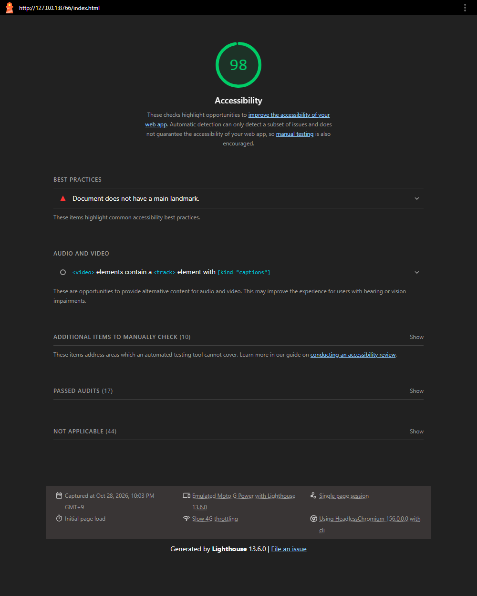
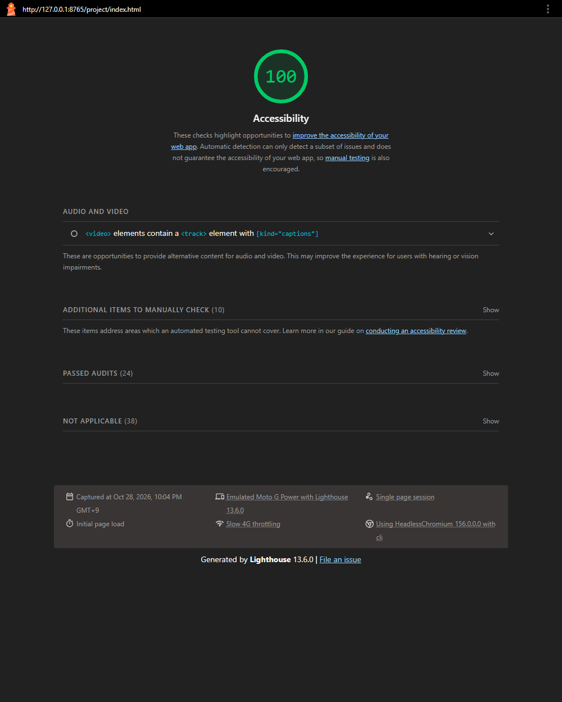
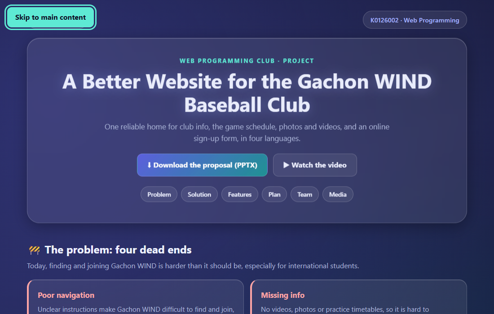
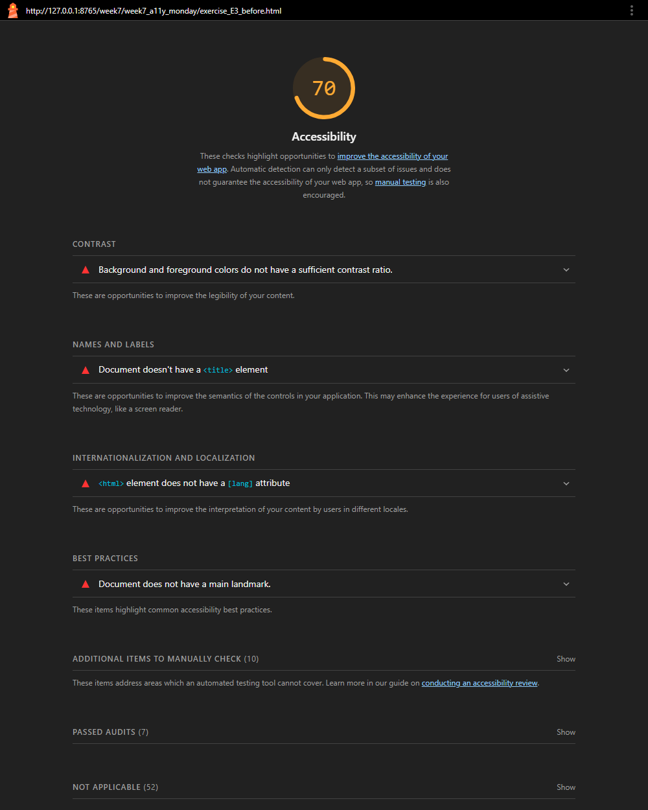
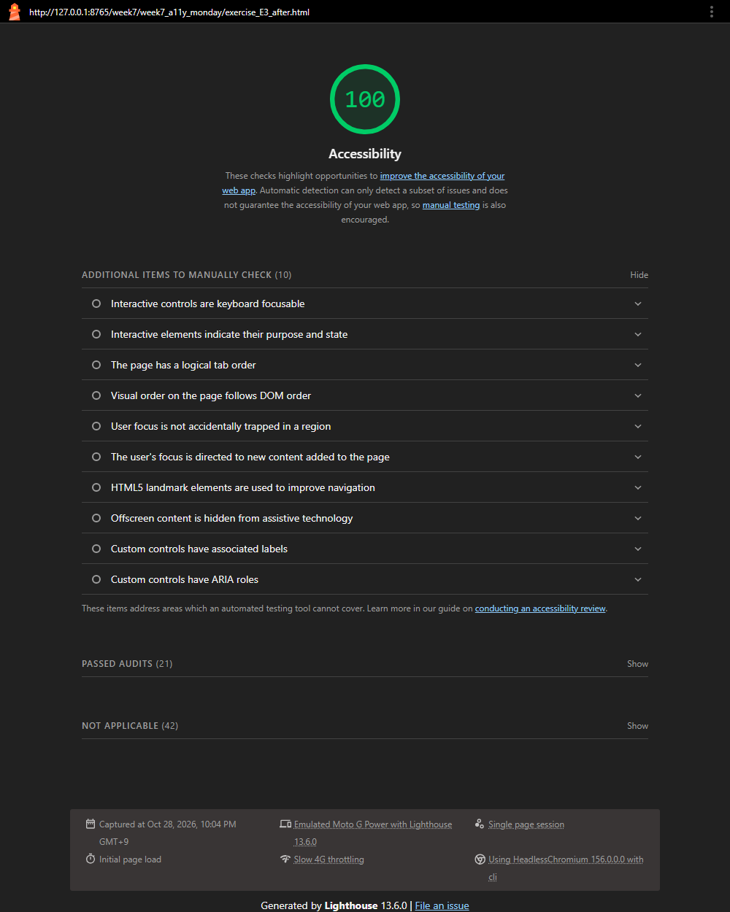

Lighthouse Accessibility Audit & Fixes
Summary
Team project page
98100
1 automated issue fixed + 5 manual-audit fixes
Exercise E3 page (practice)
70100
4 automated issues fixed
Honest note on the starting score. The project page already scored 98, so Lighthouse itself found only one failing check.
To meet the "fix at least 3 issues" goal I also did a manual review (keyboard, structure, screen-reader behaviour) and fixed five more real problems.
The E3 practice page is included because it shows a much bigger before/after change (70 → 100).
Step 1 · Audit before (project page)

Step 2 · Issues identified
| # | Issue | Found by | WCAG |
|---|---|---|---|
| 1 | No <main> landmark, so screen-reader users cannot jump to the main content | Lighthouse | 1.3.1 / 2.4.1 (landmark-one-main) |
| 2 | No “skip to content” link; keyboard users must tab through every top link first | Manual | 2.4.1 Bypass Blocks (A) |
| 3 | Decorative emoji in headings and cards, and the initial-letter avatars, are read aloud by screen readers (“construction sign”, “J”…) | Manual | 1.1.1 Non-text Content (A) |
| 4 | External link (Instagram) opens a new tab without warning | Manual | 3.2.5 / best practice (G201) |
| 5 | Custom focus styling relied on browser defaults, which can be low-contrast on the dark theme | Manual | 2.4.7 Focus Visible (AA) |
| 6 | Timeline list with list-style: none can lose its list semantics in some screen readers | Manual | 1.3.1 Info and Relationships (A) |
Step 3 · What I changed
Fix 1 · Add a <main> landmark Lighthouse
Before
</header> <section id="problem">…</section> … <section id="media">…</section> <footer>…</footer>
After
</header> <main id="main-content" tabindex="-1"> <section id="problem">…</section> … <section id="media">…</section> </main> <footer>…</footer>
Fix 2 · Skip-to-content link
Before
<body>
<div class="wrap">
(first Tab stop = “← Back to Main”)After
<body>
<a class="skip-link" href="#main-content">
Skip to main content</a>
/* hidden off-screen until focused */
.skip-link { top: -64px; }
.skip-link:focus { top: 16px; }Fix 3 · Hide decorative emoji and avatars from screen readers
Before
<h2>🚧 The problem…</h2> <span class="icon">🏫</span> <div class="avatar">J</div>
After
<h2><span aria-hidden="true">🚧</span> The problem…</h2> <span class="icon" aria-hidden="true">🏫</span> <div class="avatar" aria-hidden="true">J</div>
6 heading emoji, 5 card icons and 4 avatars. The real names and headings next to them still carry all the meaning.
Fix 4 · Tell users a link opens a new tab
Before
<a href="…" target="_blank" rel="noopener"> @GCU_WIND</a>
After
<a href="…" target="_blank" rel="noopener"> @GCU_WIND<span class="sr-only"> (opens in a new tab)</span></a>
Fix 5 · Explicit, high-contrast focus ring
Before
(browser default outline only)
After
a:focus-visible, video:focus-visible,
.btn:focus-visible, .pill:focus-visible {
outline: 3px solid #5eead4;
outline-offset: 3px;
}Fix 6 · Keep list semantics on the styled timeline
Before
<ol class="timeline">
After
<ol class="timeline" role="list">
Step 4 · Audit after

Keyboard test (bonus)
I tested with real Tab and Enter key presses in Chrome:
- The first Tab stop is now “Skip to main content”, which slides into view with a focus ring.
- Enter on it jumps to
#main-contentand moves keyboard focus into<main>, so the next Tab lands on the first link of the content. - Tabbing through the whole page visits 15 stops (links, buttons, the video player) and every link shows a visible focus ring.
- No keyboard trap: after the video controls, focus leaves the page normally.

Extra · Exercise E3 (practice page) before / after


| Problem on the E3 page | Fix | Caught by Lighthouse? |
|---|---|---|
Red error text #ff0000 on white (3.99:1, needs 4.5:1) | Darker red #b42318 plus an “Error:” label | Yes |
No <title>, no lang, no <main> | Added all three | Yes |
| Icon-only button with no label | aria-label="Search" | No |
Email input with no <label> | <label for="email-field"> | No |
| Error shown by colour only | “⚠️ Error:” text added | Partly (contrast only) |
| Linked image with alt “click here” | Alt describes the destination | No |
Limits of this audit
- Automated checks are not enough. On the E3 page, Lighthouse did not flag the unlabeled icon button, the missing input label or the “click here” alt text. Only a manual review caught them.
- No screen reader was used. I tested keyboard behaviour for real, and checked the markup that screen readers rely on, but I did not listen to NVDA or VoiceOver. That would be the next step.
- Still open: the project video has no captions. Captions need someone who has watched it, so I have not written any; they are required for WCAG 1.2.2 (Level A).